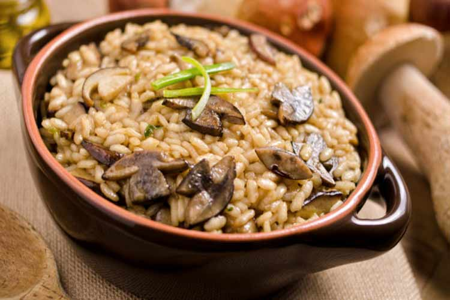

Risoto de Cogumelos Selvagens
Ingredientes:
- 300g de arroz arbóreo
- 200g de cogumelos selvagens (como shiitake, shimeji, porcini, etc.), limpos e fatiados
- 1 cebola média, picada finamente
- 2 dentes de alho, picados
- 1/2 xícara de vinho branco seco
- 1,5 litros de caldo de legumes
- 50g de manteiga
- 50g de queijo parmesão ralado
- 2 colheres de sopa de azeite de oliva
- Sal e pimenta a gosto
- Salsinha fresca picada para decorar (opcional)
Intruções:
Preparação do Caldo:
Refogando os Cogumelos:
Preparando o Risoto:
Adicionando o Caldo:
Finalizando o Risoto:
Servindo:
Leve o caldo de legumes para ferver em uma panela. Mantenha-o em fogo baixo para que permaneça quente durante todo o processo de cozimento do risoto.
Em uma frigideira grande, aqueça uma colher de sopa de azeite em fogo médio-alto.
Adicione os cogumelos fatiados e cozinhe por cerca de 5-7 minutos até que eles estejam macios e dourados.
Tempere com sal e pimenta a gosto.
Retire os cogumelos da frigideira e reserve.
Na mesma frigideira, adicione a outra colher de sopa de azeite e aqueça em fogo médio.
Adicione a cebola picada e o alho picado, refogando até que fiquem macios e translúcidos, por cerca de 3-5 minutos.
Adicione o arroz arbóreo à frigideira e mexa bem para que todos os grãos fiquem envolvidos no azeite e misturados com a cebola e o alho.
Despeje o vinho branco na frigideira e mexa constantemente até que o líquido seja absorvido pelo arroz.
Comece a adicionar o caldo de legumes, concha por concha, mexendo sempre o risoto. Espere até que o líquido seja absorvido antes de adicionar mais caldo.
Continue esse processo até que o arroz esteja cozido, cremoso e al dente. Isso deve levar cerca de 18-20 minutos.
Quando o arroz estiver pronto, adicione os cogumelos reservados à panela e misture delicadamente.
Acrescente a manteiga e o queijo parmesão ralado, mexendo até que a manteiga derreta e o queijo esteja bem incorporado.
Prove e ajuste o tempero, se necessário, com sal e pimenta.
Retire do fogo e deixe descansar por alguns minutos antes de servir.
Sirva o risoto de cogumelos selvagens quente, polvilhado com salsinha fresca picada por cima, se desejar.
Acompanha bem com um vinho branco seco.
Aproveite este risoto cremoso e reconfortante, repleto de sabores intensos de cogumelos selvagens!

Salada de Quinoa com Abacate e Tomate
Ingredientes:
- 1 xícara de quinoa lavada
- 2 xícaras de água
- 2 tomates médios, cortados em cubos
- 1 abacate maduro, cortado em cubos
- 1 pepino médio, cortado em cubos
- 1/4 xícara de cebola roxa, picada
- Suco de 1 limão
- 2 colheres de sopa de azeite de oliva extra virgem
- 2 colheres de sopa de coentro fresco picado (ou salsinha)
- Sal e pimenta-do-reino a gosto
Intruções:
Preparando a Quinoa:
Preparando os Vegetais:
Montando a Salada:
Preparando o Molho:
Mexendo e Temperando:
Servindo:
Em uma panela média, leve a quinoa e a água para ferver.
Reduza o fogo, tampe a panela e cozinhe por cerca de 15-20 minutos, ou até que a quinoa esteja macia e toda a água tenha sido absorvida.
Retire a quinoa do fogo e deixe esfriar completamente.
Enquanto a quinoa esfria, prepare os vegetais.
Em uma tigela grande, misture os tomates, abacate, pepino e cebola roxa.
Adicione a quinoa resfriada à tigela de vegetais.
Em uma tigela pequena, misture o suco de limão, o azeite de oliva, o coentro fresco picado, o sal e a pimenta-do-reino.
Despeje o molho sobre a salada de quinoa e vegetais.
Delicadamente, misture todos os ingredientes até que estejam bem combinados e o molho cubra uniformemente a salada.
Sirva a salada de quinoa com abacate e tomate imediatamente como prato principal ou como acompanhamento.
Se desejar, você pode decorar com mais coentro fresco por cima antes de servir.
Essa salada é nutritiva, refrescante e cheia de sabores vibrantes. É perfeita para um almoço leve, um jantar saudável ou até mesmo para levar como marmita para o trabalho. Aproveite!

Salmão Grelhado com Molho de Ervas Frescas
Ingredientes:
- 4 filés de salmão (aproximadamente 150g cada)
- Sal e pimenta-do-reino a gosto
- 2 colheres de sopa de azeite de oliva
- 1/2 xícara de folhas de salsa fresca, picadas
- 1/4 xícara de folhas de coentro fresco, picadas
- 1/4 xícara de folhas de manjericão fresco, picadas
- 2 colheres de sopa de cebolinha verde picada
- 2 dentes de alho, picados
- Suco de 1 limão
- 1/4 xícara de azeite de oliva extra virgem
- Sal e pimenta-do-reino a gosto
Preparando o Molho de Ervas Frescas:
Preparando o Salmão:
Montagem:
Servindo:
Para o Molho de Ervas Frescas:
Intruções:
Em um processador de alimentos ou liquidificador, adicione a salsa, o coentro, o manjericão, a cebolinha verde, o alho e o suco de limão.
Pulse algumas vezes para picar as ervas e misturar os ingredientes.
Com o processador funcionando, adicione lentamente o azeite de oliva até obter uma mistura homogênea.
Tempere com sal e pimenta-do-reino a gosto. Reserve.
Tempere os filés de salmão com sal e pimenta-do-reino a gosto em ambos os lados.
Em uma frigideira ou grelha, aqueça o azeite de oliva em fogo médio-alto.
Quando a frigideira estiver quente, adicione os filés de salmão, com a pele para baixo, e grelhe por cerca de 4-5 minutos de cada lado, ou até que o salmão esteja cozido por dentro e dourado por fora.
Retire os filés de salmão da frigideira e coloque-os em um prato de servir.
Regue os filés de salmão com o molho de ervas frescas preparado anteriormente.
Sirva o salmão grelhado com o molho de ervas frescas imediatamente, acompanhado de acompanhamentos de sua preferência, como arroz, legumes grelhados ou salada.
Você pode decorar com algumas folhas de ervas frescas adicionais por cima, se desejar.
Este Salmão Grelhado com Molho de Ervas Frescas é uma opção saudável, cheia de sabor e fácil de preparar. A combinação de ervas frescas realça o sabor natural do salmão, tornando este prato uma escolha perfeita para qualquer ocasião. Aproveite!